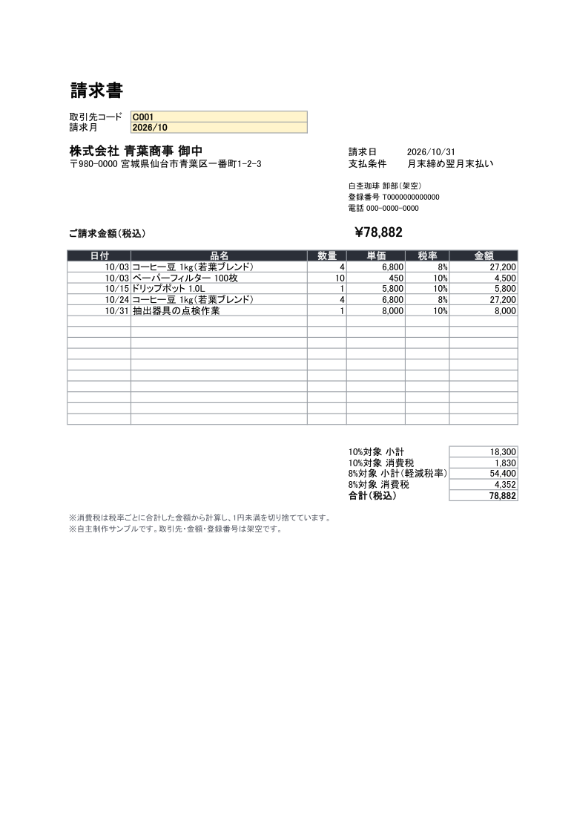

スクレイピング実演
練習用ECサイトから商品100件を集めてExcelに保存しています実行画面のキャプチャを付けています
- 件数100件
- 所要時間137秒
- 納品形式Excel（.xlsx）

自主制作サンプルですデータはすべて架空、または練習用に公開されているサイトのものです
Scripts, spreadsheets & data
入力ファイル・スクリプト・出力ファイルを1組ずつ置いていますサンプルは3組です
練習用ECサイトから商品100件を集めてExcelに保存しています実行画面のキャプチャを付けています
CSVから出荷伝票PDFを作る変換、請求書自動生成ブック、表記ゆれのデータ整形の3点を置いていますデータ整形はBeforeとAfterを並べて確認できます

営業リストとSNSインフルエンサーリストの形式見本ですデータはすべて架空です